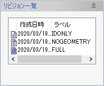
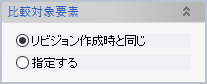
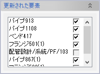
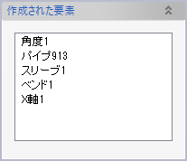
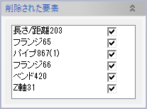
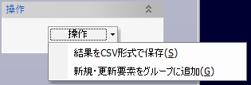

リビジョン作成コマンドで保存しておいたリビジョンと、現在の3Dモデルの状態とを比較し、相違点を要素リストや形状プレビューで表示します。
比較結果はモデル内に要素グループとして保存したり、外部テキストファイルに出力したりできます。
比較するリビジョンをリストから選択し、必要であれば現在のモデル内で比較対象となる要素を選択して、OKをクリックします。

ドキュメント内に保存ずみのリビジョン一覧が表示されますので、その中から比較したいリビジョンを選択します。
リスト左端のアイコンはリビジョンの種類を表しています。「ID」と書かれたアイコンが「要素IDのみ」、灰色のアイコンが「要素情報（最小限）」、そして紺色のアイコンが「要素情報」を表します。

| リビジョンの要素指定方法 | 3Dモデル側の比較対象 |
|---|---|
| 全ての要素 | モデル内の全ての要素 |
| 表示されている要素 | モデル内で表示状態がONになっている要素 |
| 要素選択 | リビジョンとモデルとの両方に含まれる要素 |
| グループ選択 | リビジョン作成時に選択されたグループに、現在のモデル内において含まれる要素 |

要素編集によってパラメータが変更された要素のリストです。ドキュメントウィンドウには変更前の形状がプレビューとして表示されていますが、このリスト内のチェックボックスでプレビュー表示のON/OFFを切り替えられます。またリスト内の項目で右クリックすると以下のコンテキストメニューが表示されます。
比較対象に指定されたモデル内要素のうち、リビジョンに含まれないものが選択リストボックスに表示されます。
リビジョン内の要素のうち、比較対象に指定されたモデル内要素に含まれないもののリストです。ドキュメントウィンドウには削除前の形状がプレビューとして表示されていますが、このリスト内のチェックボックスでプレビュー表示のON/OFFを切り替えられます。またリスト内の項目で右クリックして表示されるコンテキストメニューの「削除前形状を確認」でプレビューを拡大表示します。
リビジョン比較結果について以下の操作が可能です。変更の種類（Modified/Created/Deleted）,要素名,要素グループ,配管区画,配管系統,配管一品
[指定した要素グループ]
+--RDIFFyymmddhhMM
+--Created
+--[新規要素1]
+--[新規要素2]
+--Modified
+--[更新要素1]
+--[更新要素2]